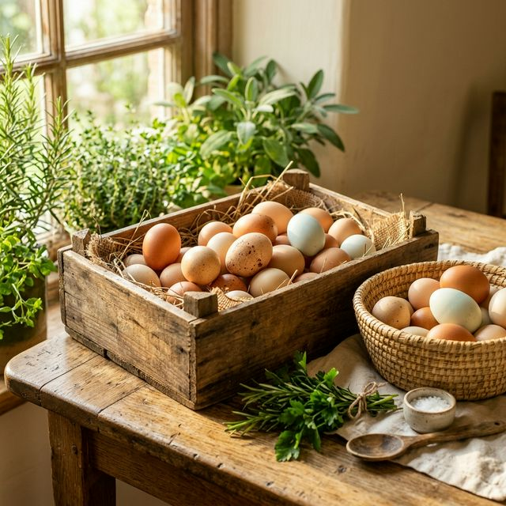
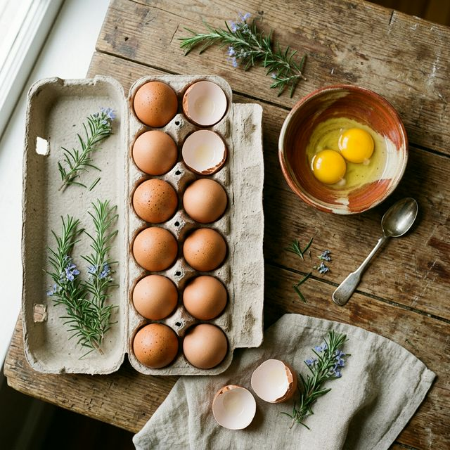

Segar Setiap Hari
Telur dipasok langsung dari peternak lokal terpercaya, dijamin segar dan berkualitas tinggi setiap harinya.
Dalam bahasa Bali, Taluh berarti Telur dan Mesiu berarti Seribu — setiap telur menghasilkan seribu rupiah bagi peternak. Kami menyediakan telur ayam segar berkualitas tinggi, langsung dari peternak terpercaya di Ungasan, Kuta Selatan.

Kami berkomitmen menghadirkan telur segar berkualitas tinggi dengan pelayanan terbaik untuk keluarga Anda.
Telur dipasok langsung dari peternak lokal terpercaya, dijamin segar dan berkualitas tinggi setiap harinya.
Hanya Rp50.000 per krat (30 butir). Harga terbaik untuk kualitas premium langsung dari sumbernya.
Layanan pengiriman cepat ke area Kuta Selatan. Di luar area tersebut tetap dilayani dengan biaya ongkir terjangkau.
Proses penyimpanan dan pengiriman dilakukan dengan standar kebersihan tinggi demi menjaga kualitas telur.
Cukup hubungi kami melalui WhatsApp, pesan kapan saja, dan telur segar siap diantar ke lokasi Anda.
Ratusan pelanggan tetap di Bali sudah mempercayakan kebutuhan telur mereka kepada Taluh Mesiu.

Taluh Mesiu lahir dari semangat memberdayakan peternak ayam lokal di Ungasan, Kuta Selatan. Kami percaya bahwa setiap butir telur bukan hanya sumber nutrisi, tapi juga sumber penghidupan bagi keluarga peternak.
Dalam bahasa Bali, Taluh berarti Telur dan Mesiu berarti Seribu. Filosofi ini bermakna bahwa setiap telur yang terjual menghasilkan seribu rupiah bagi peternak — simbol harapan dan penghidupan dari hal yang sederhana.
Dengan komitmen pada kualitas dan harga yang adil, kami menjembatani peternak lokal dengan konsumen yang menginginkan telur segar, higienis, dan terjangkau. Setiap krat yang Anda pesan tidak hanya memberi Anda nutrisi terbaik, tapi juga mendukung ekonomi lokal di Bali.
Hubungi KamiPrinsip-prinsip yang menjadi fondasi Taluh Mesiu dalam melayani pelanggan dan mendukung peternak.
Harga bersaing bagi konsumen, penghidupan layak bagi peternak. Win-win untuk semua pihak.
Telur dipasok langsung dari kandang ke tangan Anda. Proses singkat, kualitas terjaga.
Mendukung ekonomi peternak lokal Bali demi peternakan yang sehat and berkelanjutan.
Tersedia telur ayam berkualitas dengan harga terjangkau. Minimal pemesanan 1 krat.

Telur ayam segar pilihan dari peternak lokal terpercaya di Bali. Setiap krat berisi 30 butir telur berkualitas dengan kuning pekat dan cangkang kuat.
30 butir telur ayam segar
Rp50.000 per krat (30 butir)
1 krat / 30 butir
Gratis area Kuta Selatan. Di luar Kuta Selatan dikenakan biaya ongkir.
30 butir — cocok untuk keluarga
90 butir — hemat lebih banyak
150 butir — ideal untuk warung & usaha
Harga spesial untuk pembelian besar
Pelanggan kami dari berbagai kalangan di Bali sudah merasakan kualitas telur Taluh Mesiu.
"Telurnya selalu segar, kuningnya pekat banget. Sudah langganan hampir setahun, nggak pernah mengecewakan. Pengiriman juga cepat!"
"Harga Rp50rb per krat itu sangat worth it. Kualitas telurnya jauh di atas rata-rata, cangkangnya kuat dan bersih. Recommended!"
"Untuk usaha catering kami, telur Taluh Mesiu jadi andalan. Pesan lewat WA langsung diantar, praktis banget. Kualitas selalu konsisten."
Temukan kami di Ungasan, Kuta Selatan, Bali. Kami siap melayani Anda setiap hari.
Ungasan, Kec. Kuta Sel., Kabupaten Badung, Bali 80361
Plus Code: 55C7+HX
Kuta Selatan (gratis ongkir), seluruh Bali (ongkir menyesuaikan)